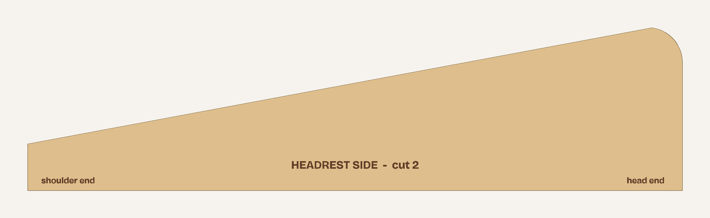

Side cut to a wedge: 1 in high at one end, 3-1/2 in at the other
1x4 (3/4 × 3-1/2 in, 19 × 89 mm) × 14 in (356 mm)
B
2
Cleat follows the slope, flush with the top of the side
3/4 × 3/4 in (19 × 19 mm) strip × 13-1/4 in (336 mm)
C
7
Slat all edges rounded
1x2 (3/4 × 1-1/2 in, 19 × 38 mm) × 12 in (305 mm)
Hardware
14 stainless wood screws, #8 × 1-1/4 in (4 × 32 mm): up through the cleats into the slats
6 stainless wood screws, #8 × 1-1/4 in: through the cleats into the sides, from the inside
No glue, no nails, no metal on top
Wood
Use a wood that is sold for sauna interiors where you live, such as aspen, alder or western red cedar. Choose clear boards without loose knots or resin pockets.
Made by DIVELUX, makers of handmade wool sauna hats · diveluxsaunahat.com · more free tools: diveluxsaunahat.com/pages/sauna-toolsCC BY 4.0 · Build at your own risk.
Cut both sides from a 1x4: 14 in (356 mm) long, 1 in (25 mm) high at the shoulder end, full 3-1/2 in (89 mm) at the head end. Trace the full-size template, or mark the two heights and join them with a straight line. Round the top corner at the head end.
Clamp the two sides together and sand them to the same shape.
Cut two cleats 13-1/4 in (336 mm) long. Fix each one to the inside face of a side, its top flush with the sloped top edge, with three screws driven from the cleat into the side.
Cut 7 slats 12 in (305 mm) long. Round every edge, especially the top ones, and sand smooth.
Stand the sides 10 in (254 mm) apart outside to outside, 1 in (25 mm) in from each slat end. Lay the slats on top, 3/8 in (10 mm) apart (a 3/8 in spacer helps), starting 3/4 in (19 mm) along the slope from the shoulder end.
Turn it over and fix every slat with two screws driven up through the cleats. The screws stop about 1/4 in below the top surface.
Check every surface with your hand: no splinters, no screw tips, no sharp corners. Leave it unfinished.
Full-size side template
svg/ and dxf/: the side outline at 1:1 (356 × 89 mm), for a laser, a CNC, or to print at 100% and trace. Red = cut, black = engraved label. Cut 2.

Use
Lay it on the bench with the high end under your head. The slope is gentle, about 10°. Lift it away to clean the bench and let it dry with the rest of the sauna wood.
Safety
Build at your own risk. These are hobby plans, not engineered drawings, and nobody has checked them for your bench, your wall or your sauna.
Check that nothing can burn or pinch: no metal on a surface skin can touch, no sharp edges, no gaps that can trap a finger.
Round over or sand every edge you can touch. Leave wood for the hot room unfinished: no varnish, paint or stain.
Hot room or not: screws and other metal get hot in a sauna. Keep every head below the surface or on the hidden side.
Made by DIVELUX, makers of handmade wool sauna hats · diveluxsaunahat.com · more free tools: diveluxsaunahat.com/pages/sauna-toolsCC BY 4.0 · Build at your own risk.